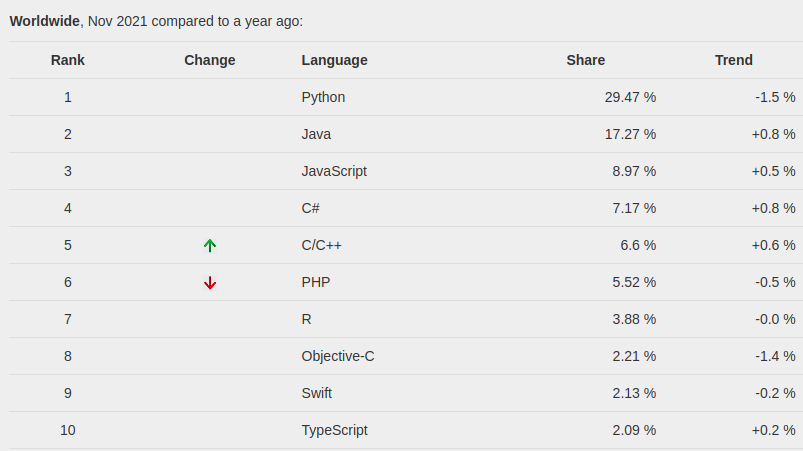
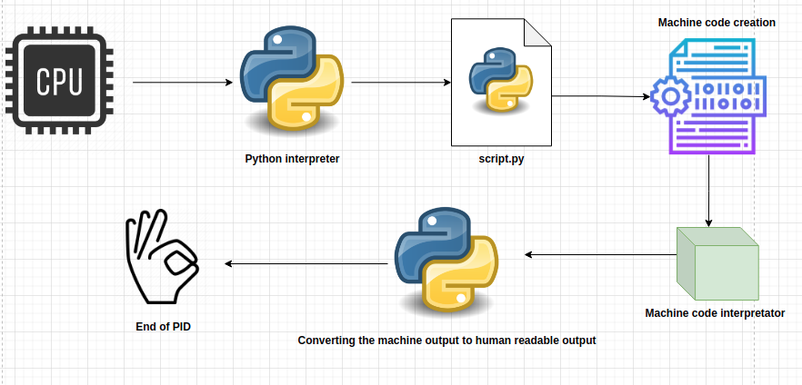

Python¶
Anecdotally, Python is considered to be “the second best language in almost every field of computing.”. Due to its versitality, the growth and popularity of this programming language has grown immensly since its first version which was released in 20 February 1991 by Guido van Rossum. As per the PYPL index[PyPL, 2021]:

Based on the searched tutorials for a given language, Python is the most popular programming language in the world as of 2021 November.
The foundational piece of software to create and serve machine learning models is Python. Every other technology and programs which will be covered in this book acts as “helpers” for Python to ingest input from the user and give output.
Zen of Python¶
There are rules of programming which every developer should follow, especially when coding with Python. The rules (or the Zen of Python) are[Zen, 2021]:
Beautiful is better than ugly.
Explicit is better than implicit.
Simple is better than complex.
Complex is better than complicated.
Flat is better than nested.
Sparse is better than dense.
Readability counts.
Special cases aren’t special enough to break the rules.
Although practicality beats purity.
Errors should never pass silently.
Unless explicitly silenced.
In the face of ambiguity, refuse the temptation to guess.
There should be one– and preferably only one –obvious way to do it.
Although that way may not be obvious at first unless you’re Dutch.
Now is better than never.
Although never is often better than right now.
If the implementation is hard to explain, it’s a bad idea.
If the implementation is easy to explain, it may be a good idea.
Namespaces are one honking great idea – let’s do more of those!
If you understand all of these concepts and can explain them in simple terms to a non programming friend - congratulations, that is a sign of an experienced developer.
What is Python?¶
For a great tutorial about Python please visit the official documentation of Python https://docs.python.org/3/.
Python is both a programming language and an interpreter, depending on the context.
A programming language is a language that converts a set of strings into a machine code. A programming language has it’s own unique syntax and the way that it converts human readable code to machine readable code. The most essential objective of any programming language is to give instructions to the computer.
An example of code in Python syntax is the following:
# Definining variables and assigning them values
a = 5.1
b = 10.5
# Defining a function
def add(a:float, b:float) -> float:
"""
Return the sum of a and b
"""
return a + b
# Invoking the function with the two variables
print(f"The sum of {a} and {b} is {add(a, b)}")
The sum of 5.1 and 10.5 is 15.6
In order for my machine to evaluate the code above, the Python interpreter needs to be installed on my computer, the code editor which I am working on needs to identify the block to be a Python code snippet and the resources on my computer need to be available.
A computer interpreter is a piece of software that translates human readable code to machine code. The phrase “installing Python” ussualy means downloading, unpacking and registering the Python interpreter to a machine. On a Linux machine, Python ussualy can be found in:
/usr/local/bin
Python installation¶
In order to install Python on an Ubuntu OS use the command:
sudo apt install -y build-essential libssl-dev libffi-dev python3-dev python3-pip
The above command will install the latest version of Python and the Python package manager called pip.
# Printing out the Python version in code
import sys
print(f"The Python version is {sys.version}")
The Python version is 3.8.10 (default, Sep 28 2021, 16:10:42)
[GCC 9.3.0]
The GCC version is the version of C++ compiler that Python has access to. It uses C++ when converting code to machine instructions.
# Printint out python version on Ubuntu command line
!python3 -V
Python 3.8.10
Python process example¶
Let us say we have a piece of code in the file called script.py. The contents of the file are:
!cat scripts/script.py
# Importing the system module
from os import system
# Making a ping to google
system("ping -c 5 www.google.com")
The code in the script sends a very small batch of data to the link “www.google.com” and waits for the response. This process is done 5 times. To invoke the process, we can use the command line:
python3 scripts/script.py
A somewhat high level flow of the code is presented in the chart:

First, the whole process gets a number (PID) and the CPU procedes with the thread.
The python interpreter converts the human readable code to a machine code and transfers it to the compiler.
The output from the compiler is returned and then then Python converts the output from the machine to human readable code.
When the process is finished, the PID dissapears and nothing is stored in memory or other places in the computer.
The process in action:
!python3 scripts/script.py
PING www.google.com (172.217.16.4) 56(84) bytes of data.
64 bytes from waw02s13-in-f4.1e100.net (172.217.16.4): icmp_seq=1 ttl=117 time=12.1 ms
64 bytes from waw02s13-in-f4.1e100.net (172.217.16.4): icmp_seq=2 ttl=117 time=12.5 ms
64 bytes from waw02s13-in-f4.1e100.net (172.217.16.4): icmp_seq=3 ttl=117 time=12.0 ms
64 bytes from waw02s13-in-f4.1e100.net (172.217.16.4): icmp_seq=4 ttl=117 time=12.7 ms
64 bytes from waw02s13-in-f4.1e100.net (172.217.16.4): icmp_seq=5 ttl=117 time=13.0 ms
--- www.google.com ping statistics ---
5 packets transmitted, 5 received, 0% packet loss, time 4006ms
rtt min/avg/max/mdev = 12.031/12.455/12.950/0.361 ms
No matter the complexity of the Python script and the objects it creates, the flow is very similar to all Python processes running on a given machine.
This chapter is just a small taste of Python. There are huge frameworks and codes used by millions of users every day which are written in Python. All of the robust and popular packages of Python follow the same guiding programming priciples which will be covered in the next chapter of the book.